Префектура Яманаси · озеро Кавагутико · искусство
Художественный музей Кавагутико: Фудзи на картинах и озеро за стеклом
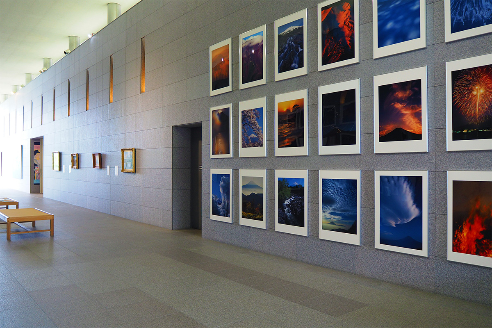
На северном берегу озера Кавагутико, у подножия Фудзи, стоит музей, который почти целиком посвящён этой горе. Сюда едут за искусством, архитектурой и видом на озеро, который открывается прямо из окон музея.
Музей
Фудзи у подножия Фудзи
Кавагутико входит в Пять озёр Фудзи, цепочку озёр на северном склоне горы со стороны префектуры Яманаси. Из пяти у него самая длинная береговая линия, и в любое время года здесь есть на что посмотреть: весной на берегах цветёт сакура, в начале лета распускается фиолетовая лаванда, осенью краснеют клёны.
Художественный музей Кавагутико открылся в апреле 1991 года на территории национального парка Фудзи-Хаконэ-Идзу. Место подсказало и тему: музей известен картинами, гравюрами и фотографиями, на которых изображена Фудзи. Кроме постоянной экспозиции здесь проходят временные выставки самого разного содержания, японские и зарубежные.
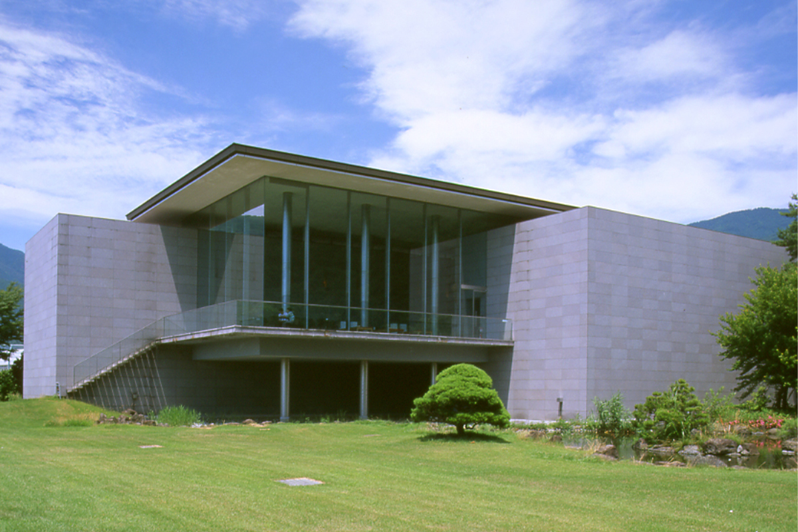
Светлое просторное здание спроектировала мастерская «Сакакура Ателье» (прежде «Сакакура Интернэшнл»), которую возглавляет архитектор Такэносукэ Сакакура. Пространство в нём устроено ясно и просто: дизайн здесь подчинён идеям модернизма.
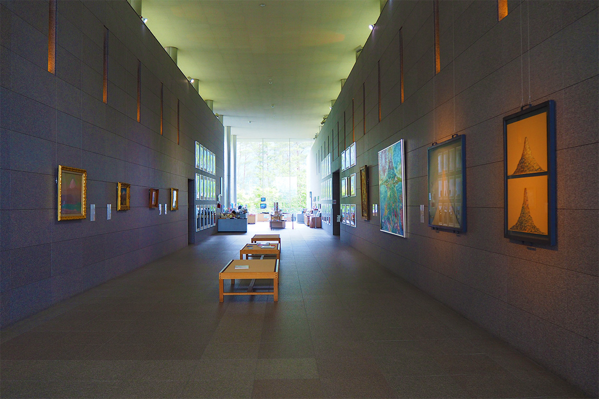
От входа галерея тянется с востока на запад, а по сторонам от неё расположены выставочные залы. Фудзи здесь можно увидеть глазами самых разных художников, старых и современных.
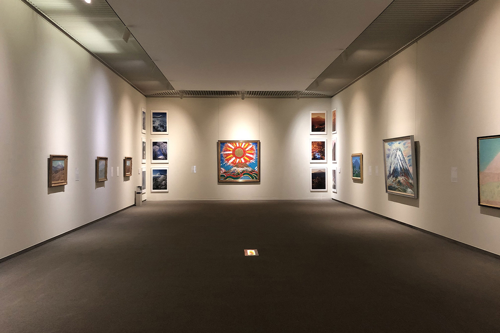
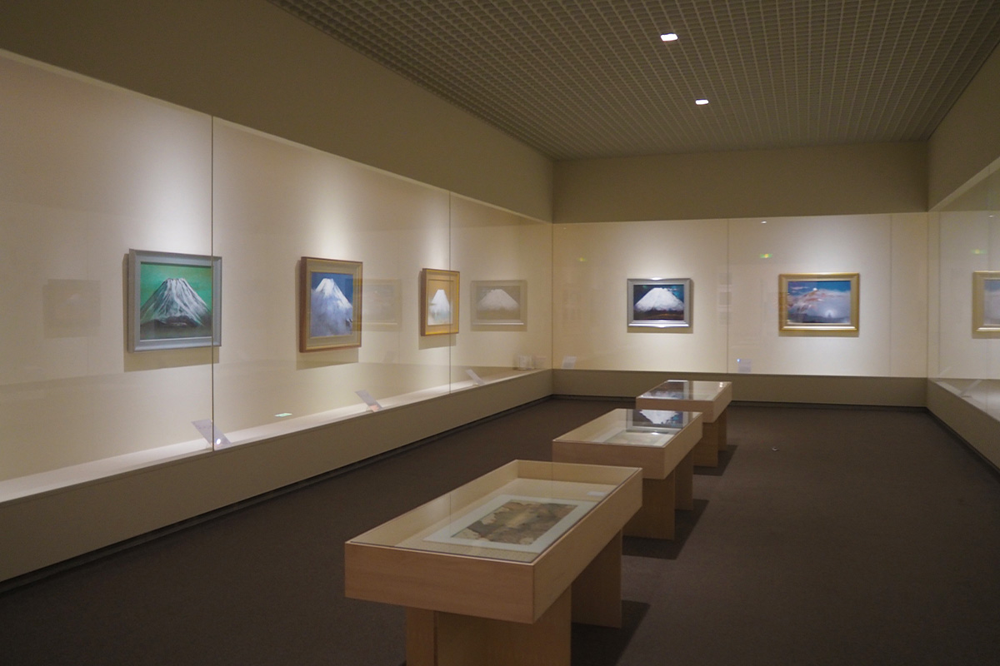
Кафе
Озеро за стеклом
В глубине галереи находится кафе Cafe Kawaguchiko View. Название честное: озеро видно с каждого места. За стеклом меняются сезоны и бежит по воде рябь, и всё это достаётся только вам. В кафе можно зайти после выставки, а можно и без билета в музей, просто во время прогулки вдоль берега. Осенью 2026 года, по данным сайта музея, кафе не работало, но на верхнем этаже есть зал, откуда видно озеро.
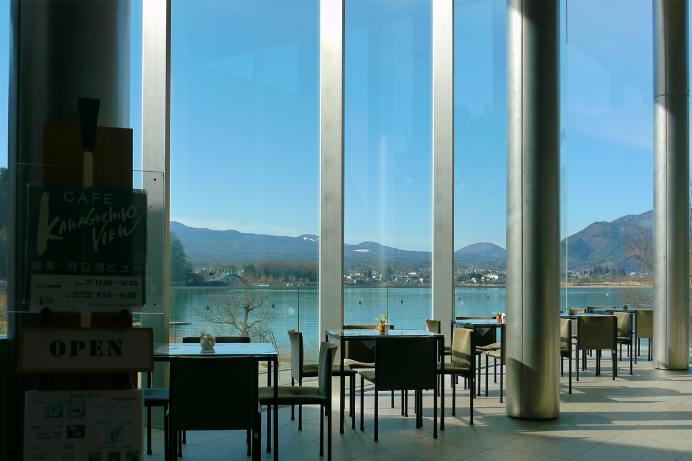
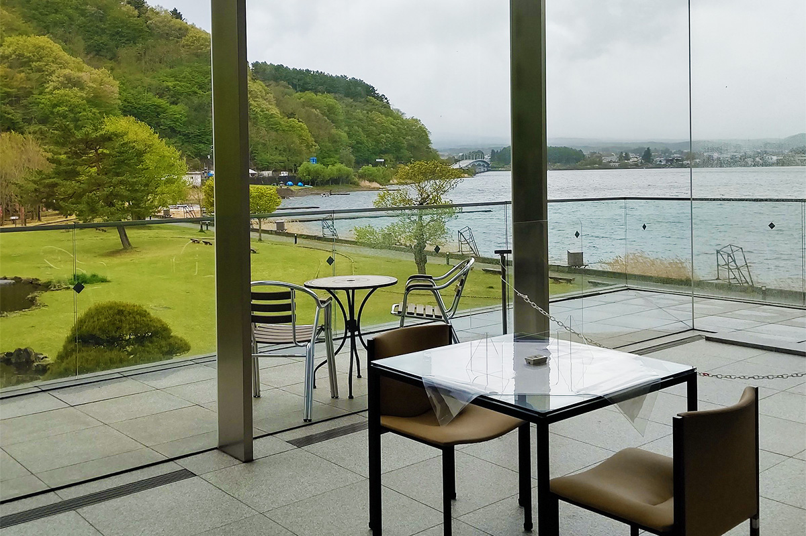
Природой можно любоваться и из музейного магазина: одна его стена целиком стеклянная. Здесь продают открытки, фотографии, книги и много других вещей, так или иначе связанных с Фудзи. Во время временных выставок появляются товары, которые продаются только в эти недели. После выставки и кафе стоит не спеша пройтись по магазину.
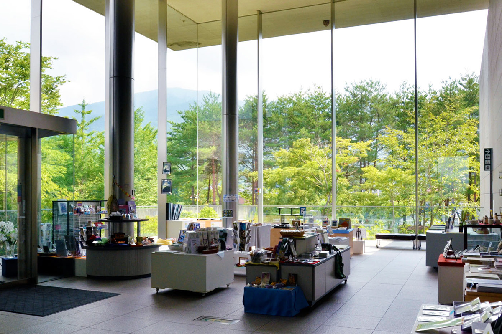
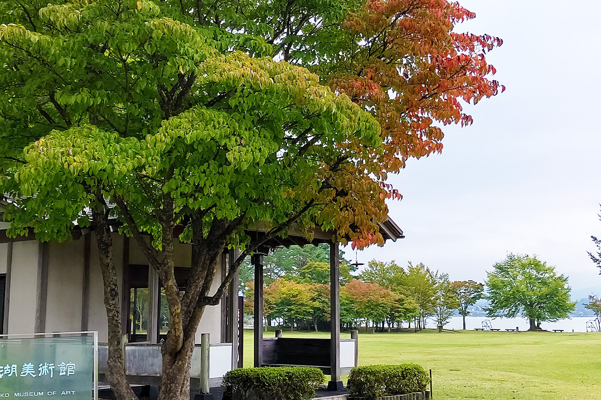
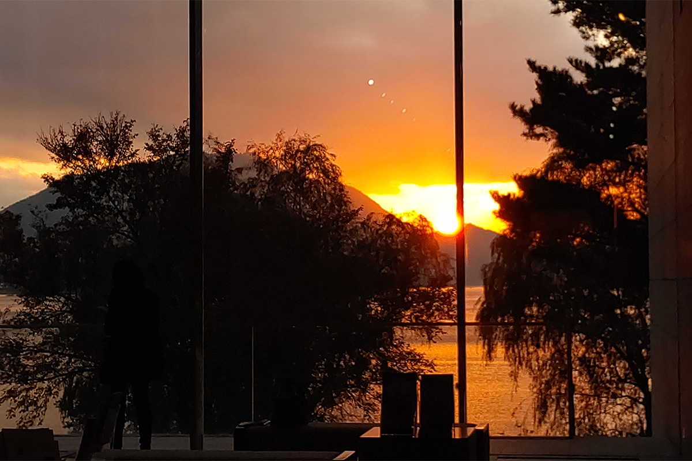
Здесь сошлись красивое озеро, близкая Фудзи и сама гора в работах художников разных эпох. Картины и снимки в таком месте смотрятся по-новому, и ради этого сюда стоит приехать.
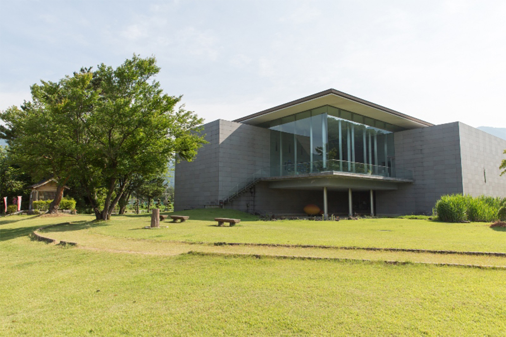
Художественный музей Кавагутико
- Адрес
- префектура Яманаси, посёлок Фудзикавагутико, Кавагути, 3170
- Телефон
- +81 555-73-8666
- Часы работы
- 10:00–15:00 (вход до 14:30)
- Выходные
- вторник (если праздник, музей открыт), конец года, нерегулярные дни при смене экспозиции
- Как добраться
- на машине около 10 минут от съезда Кавагутико скоростной дороги или от станции Кавагутико; от станции Кавагутико около 18 минут на ретро-автобусе вокруг озера до остановки «Кавагутико бидзюцукан»
- Сайт
- fkchannel.jp